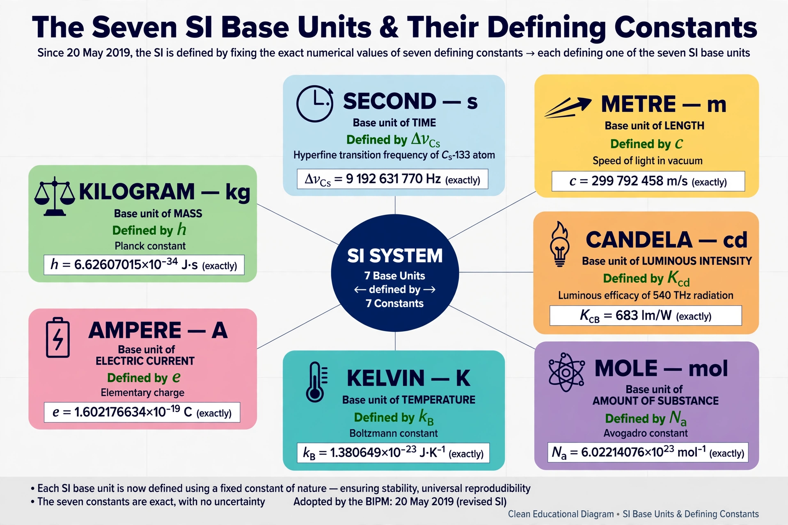

| 2019 SI redefinition | |
|---|---|
| Adopted | 16 November 2018 (26th CGPM) |
| Effective | 20 May 2019 (World Metrology Day) |
| Units redefined | Kilogram, ampere, kelvin, mole |
| Basis | Fixed numerical values of Planck constant h, elementary charge e, Boltzmann constant k, Avogadro constant NA |

The 2019 redefinition of the SI base units was the largest revision of the International System of Units since its establishment. Adopted by the 26th General Conference on Weights and Measures (CGPM) in November 2018 and effective 20 May 2019, it redefined four base units — the kilogram, ampere, kelvin and mole — so that the whole system now rests on fixed numerical values of seven defining constants of nature.
Most significantly, the kilogram ceased to be defined by the International Prototype of the Kilogram, a platinum–iridium cylinder kept near Paris since 1889 whose mass was observed to drift, and is instead defined by fixing the Planck constant. The ampere is defined by the elementary charge; the kelvin by the Boltzmann constant; and the mole by the Avogadro constant, decoupling it from the kilogram. The second, metre and candela were reworded to match the new framework without changing their size.
For everyday purposes nothing changed: the values of the constants were chosen so the new units matched the old within measurement uncertainty. The reform ensures that definitions are universal, stable over time and realisable anywhere with sufficient technology, for example by Kibble balances for the kilogram.